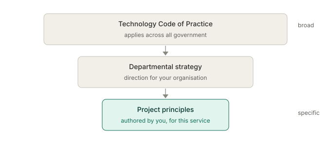

Architecture principles and decision making
Architecture is decision making. Every day you choose between options, accept trade-offs, and set constraints that shape the solution. Without something to guide those choices, each one is made in isolation, and isolated decisions add up to an incoherent system. Principles are the thread that ties hundreds of small decisions into one whole, and good records are how anyone later understands why you chose what you did. In government, neither is optional.
You'll come away with:
- What an architecture principle is, and what it isn't: a rule, a goal, or a technology choice.
- How the Technology Code of Practice and your own project principles fit into one hierarchy.
- Decision frameworks that produce defensible choices, including matching effort to how reversible a decision is.
- How to capture decisions in Architecture Decision Records that survive scrutiny and staff turnover.
What an architecture principle is
An architecture principle is a fundamental statement of belief that guides a decision. The good ones are stable, so they don't change with every project; directional, so they point at a preferred approach; and actionable, so they actually help you choose. It's easier to pin down by saying what a principle isn't. It isn't a rule. A rule is absolute: all data must be encrypted at rest. A principle is directional: we prefer open standards to proprietary formats, and you can deviate if you can justify it. It isn't a goal, either. A goal is an outcome you want, like cutting processing time by half; a principle is how you'll approach getting there, like designing for automation over manual steps. And it isn't a technology choice. "We use AWS" is a decision. "We prefer cloud hosted services to running our own infrastructure" is a principle, and on a given day it might lead to AWS, Azure or GCP.
A principle worth having carries four things with it: a statement ("design for change"), a rationale (government policy moves constantly, and systems that resist change become expensive liabilities), the implications in practice (separate business rules from application logic, prefer configuration to hard coded values, build modular components with clear interfaces), and the exceptions (a short lived prototype might trade modularity for speed of learning). The test is simple. Does it help you decide? If it never rules anything out, like "we build good systems", it's useless. If it only ever fits one situation, like "we use PostgreSQL for all relational data", it's a decision wearing a principle's clothes. The useful ones sit in between, specific enough to steer a choice and general enough to apply to many.
If a principle never rules anything out, it isn't doing any work.
Principles come in a hierarchy
You don't write most of your principles. You inherit them. They stack up in a hierarchy, and your job is to know where yours sit in it.

At the top is the Technology Code of Practice, the principles every government technology decision is meant to align with. They repay reading through an architecture lens rather than reciting. Define user needs means the option that serves users better wins, even when it's the less elegant one. Make things accessible means WCAG 2.2 AA is a constraint on your front end, your document generation and your error handling, designed in from the start. Be open and use open source means preferring open standards like REST, JSON and OAuth, reusing open source where it fits, and publishing your own code unless there's reason not to. Make use of cloud means cloud is the default and running your own infrastructure needs a real justification. Make things secure means threat modelling, secure defaults, least privilege and defence in depth at every layer. Integrate and adapt means designing for integration through APIs and replaceable parts rather than a monolith you can't unpick. Make better use of data means treating data as a shared asset other services might need. And share and reuse means checking what already exists, the common GOV.UK components like Notify, Pay and One Login, before you build anything new.
These don't always agree. Be open can pull against make things secure when the most secure option is proprietary. Make use of cloud can pull against share and reuse when the reusable component runs on someone else's infrastructure. When principles collide you make a judgment, document the trade-off, and make sure the call is defensible. More on that below.
Writing your own project principles
The Code and your department take you most of the way, but every project has a context they don't address, and that's where you write a few of your own. Project principles sit beneath the inherited ones and add specificity rather than contradicting them. If the Code says make use of cloud, yours might say use serverless where usage is intermittent, to keep the cost down. They should answer your project's actual challenges: a lot of legacy to integrate might give you "isolate legacy behind adapters so its changes don't propagate", a small operations team might give you "prefer managed services to anything self hosted". They only work if the team agrees them, so write them with the team, not at it. And keep them few, because nobody remembers twelve. A reasonable set for a service might read:
- User needs first. Decisions are justified by user needs, not technology preference.
- Cloud native by default. Managed services unless there's a specific reason to self host.
- Progressive enhancement. The service works without JavaScript; JavaScript improves it.
- Configuration over code. Rules that move with policy live in configuration, not the codebase.
- Observable by design. Every component emits the logs, metrics and health checks operations need.
- Reuse before build. Check for existing government components and services first.
- Data minimisation. Collect and keep only the data the service genuinely needs.
Give each one a rationale and its implications, the same way the Code does, and revisit them as the project moves. A principle that no longer serves the work should be retired, not left to gather dust.
Frameworks for making the call
Principles steer a decision; you still need a way to actually make it. A few frameworks travel well in government. A weighted decision matrix, options as columns and criteria as weighted rows, is transparent and easy to explain to a non technical board, as long as you don't fall for false precision: a 7.3 against a 7.1 is a tie, not a winner, so use it to separate the clearly strong from the clearly weak. A cost, benefit and risk view suits programme boards because it's how they already think, provided you're honest about the costs and risks of your recommended option, not only the rejected ones. The reversibility test is the one I reach for most.

It asks a single question: how hard is this to undo? Cheap, reversible decisions like a logging library or a component kit deserve a quick choice and no more. Expensive, sticky ones like your cloud provider, your database or your integration pattern deserve real analysis. Spend your effort in proportion. Two more are worth keeping to hand. Regret minimisation, asking which option you'll regret least in two years, helps when the data is ambiguous and nothing clearly wins. And for team decisions, aim for consent rather than consensus: "does anyone have a strong objection?" gets you moving, where "does everyone agree this is best?" rarely does.
Spend three hours choosing your cloud provider and three weeks choosing a logging library, and you've got it exactly backwards.
Architecture decision records
A decision you can't explain later is a decision you'll defend badly. An Architecture Decision Record is a short document, a page or two, that captures one decision: what you decided, why, what else you considered, and what it costs you. They're among the most useful things an architect produces and among the most neglected. They hold the context that evaporates over time, because in six months nobody remembers why you chose PostgreSQL over DynamoDB. They make implicit decisions explicit, instead of a technology quietly becoming the default because someone started using it. They let a decision be challenged and revised rather than excavated. And they protect you when an auditor, an assessor or a committee asks why. A good one is short and has a familiar shape:
- Title: a short, descriptive name for the decision.
- Status: proposed, accepted, deprecated or superseded, so its place in the lifecycle is clear.
- Context: the situation, constraints and requirements that prompted it, enough for a newcomer to follow.
- Decision: what was decided, stated plainly.
- Alternatives considered: what else was on the table and why it lost, which shows the decision was made, not stumbled into.
- Consequences: the good and the bad, honestly, because every decision has both.
- Review date: when, if ever, this should be looked at again.

Store them with the code or somewhere the team can always reach, number them in sequence, and never delete one, because a superseded record still has value. This matters more in government than almost anywhere, because the decisions get read by people you'll never meet. Assessors treat a clean set of records as evidence the architecture was thought through. Spend control submissions lean on them to justify the choices and their costs. Auditors use them as the trail showing decisions were made with the information available at the time. And the next architect, after the contractors have gone and the civil servants have moved on, uses them to understand the system instead of reverse engineering its rationale or, worse, breaking a decision they never knew was there. Write them as you decide, not months later; keep them in plain language a board member could follow; and link each one to the principle it serves, so the decision reads as principled rather than arbitrary.
When principles conflict
The hard decisions are the ones where your principles disagree. Be open against make things secure when the safest option is proprietary. Make use of cloud against share and reuse when the reusable thing runs on premises. Design for change against keep it simple when modularity buys flexibility at the price of complexity. There's a way through that keeps the choice defensible. Name the conflict out loud rather than pretending it isn't there: in this case our principle of openness is pulling against our principle of security, so we have a trade-off to make. Weigh their importance in this specific context, because principles don't carry fixed priorities; for sensitive personal data security outweighs openness, while for a small, stable user base simplicity might outweigh scalability. Look hard for a third option, because sometimes the conflict is false and a different design satisfies both. Then make the call, write it in an ADR with the reasoning and the consequences, and set a date to revisit it, especially if you traded away something like maintainability to hit a deadline.
A real example. A DESNZ programme needed to share commercially sensitive data with a partner. Openness argued for an open API with standard authentication. Security argued for stronger controls because of the data. Simplicity argued against anything elaborate to maintain. The resolution used an open API standard, satisfying openness, with mutual TLS and IP allow listing for security, accepting the extra operational complexity as the price, and it went into an ADR with a review six months out to check the controls were still proportionate to the risk. That's the whole job in miniature: a defensible choice rather than a perfect one, made with the consequences in full view.
Building a decision making culture
Individual decisions matter, but the bigger win is a team where good decisions happen by default. A handful of habits get you there:
- Make them visible. A decision log or ADR repository the whole team can reach, so "why do we do it this way?" takes minutes to answer, not hours.
- Make them timely. A deferred decision is expensive, because the team either waits or guesses. Set a deadline; if you're missing information, name what you need and when you'll have it.
- Make them reversible where you can. Interfaces and abstractions that let components be swapped lower the cost of being wrong, which lets you decide more boldly.
- Make them inclusive. Developers, testers, operations and business people see risks you won't. Inclusive isn't democratic, though: you decide, informed by them.
- Make them learnable. Review your big decisions after each project, what worked, what you'd change, what you learned. That's how judgment is built.
- Welcome challenge. Treat a questioned decision as a chance to strengthen it, not an attack. The best architects want their decisions tested.
In government, where scrutiny is constant and accountability is real, this is about the cheapest insurance you can buy.
When every decision is principled, documented and defensible, no review can catch you out.